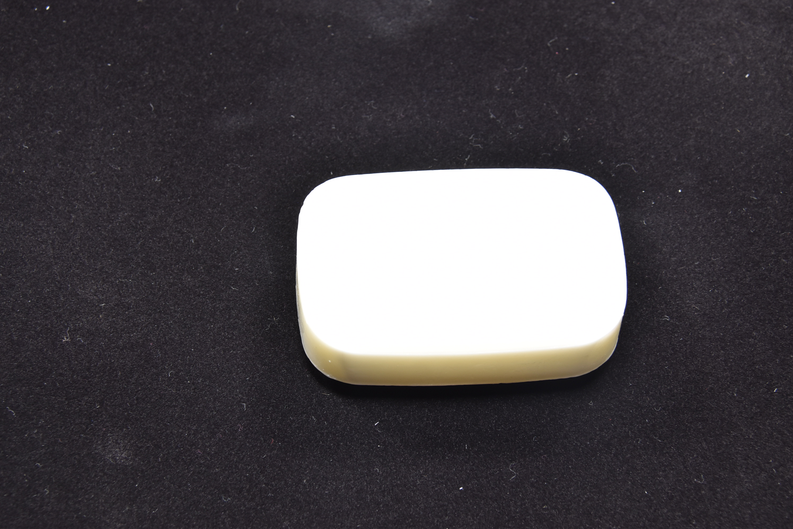
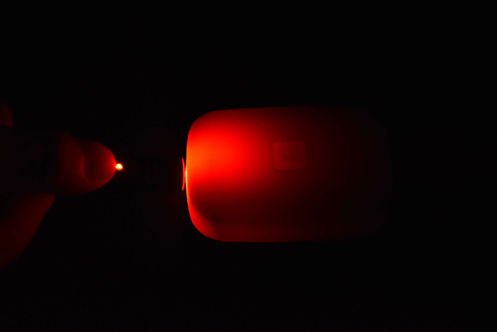

奈良先端科学技術大学院大学
情報科学研究科 光メディアインタフェース研究室
曾 醒基(M2)
・皮膚、石鹸などの半透明物体が多数存在
 ・コンピューターに半透明物体の材質を識別させるのは非常に有意味
・機械に半透明物体を理解させ、より知能的な工場自動化の実現
~例1：ポテトや卵など、異なる商品を掴む力の自動制御
~例2：商品数量の自動統計
・半透明物体の材質特性の取得時間を短縮させ、CG制作効率の向上
・半透明物体の内部で起きる複雑な光学現象の解析が極めて難しい
・半透明物体の光学特性を厳密に取得するには複雑な光学システムが必須
~コストが高い
~環境ノイズに弱く、大規模の応用は難しい
・半透明物体に特化する方法が少ない
・CGのレンダリングを勉強しながら、問題の解決手法を提案しました
・英、和論文を読み、既存手法から自分の研究に適用できるツールを探します
・研究の要求に応じて、プログラミングスキルをしっかり身につきます
・光学特性を測定するために、厳密な光学システムを設計しました